Slim Diamond
A wireless, low-profile remake of the handwired Diamond (1333+2 per half). The layout and goals are mine; the PCB, the printed case and every check were generated as code by Claude, Anthropic's model, working in Claude Code.
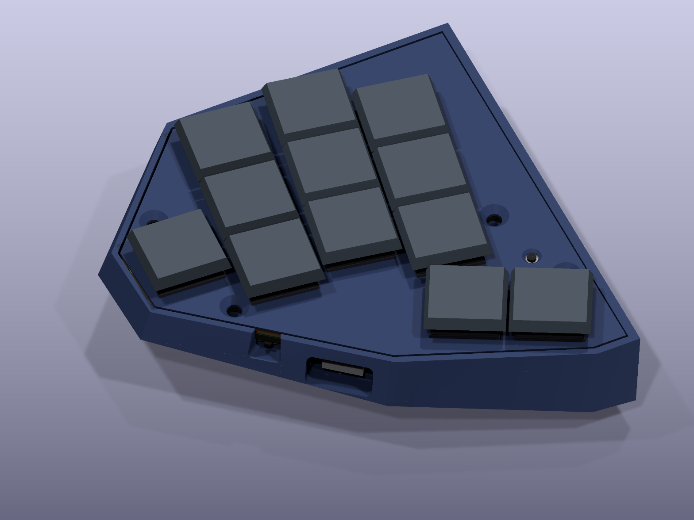
The board
| Keys | 24 Choc v1 hot-swap, all 1u: 3×3, a pinky key and two thumbs per half |
|---|---|
| Wiring | Diodeless, one pin per key: 11 Xiao edge pins plus the NFC1 pad |
| Controller | A XIAO-sized nRF52840 per half: the Seeed XIAO nRF52840 or the NologoTech Super52840, on the same board. ZMK firmware, the same for both |
| Power | 752025 LiPo (250 mAh) on a JST PH socket, MSK-12C02 slide switch beside the USB-C port |
| PCB | 87.6 × 92.3 mm, 2 layers, one reversible design for both halves |
| Case | Solid printed base tented 6.6°, 18.6 mm at the seam and 8.7 mm at the outer edge, with a 1.2 mm top plate |
| Extras | Magnets to join the halves or stack them for travel, anti-slip pads that interleave when stacked, a reset button under a cone hole in the plate |
| Assembly | Soldering iron only: no paste, no hot air |
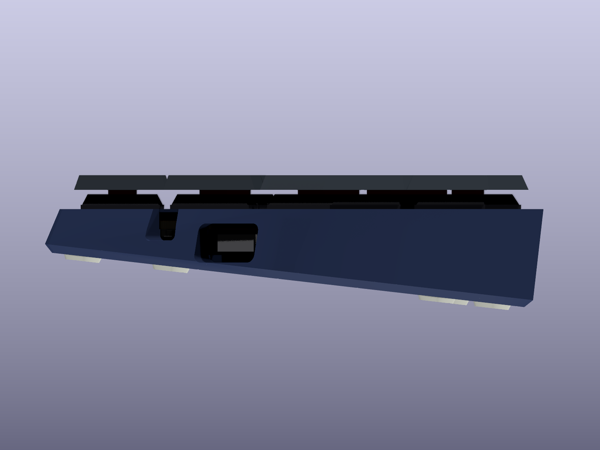
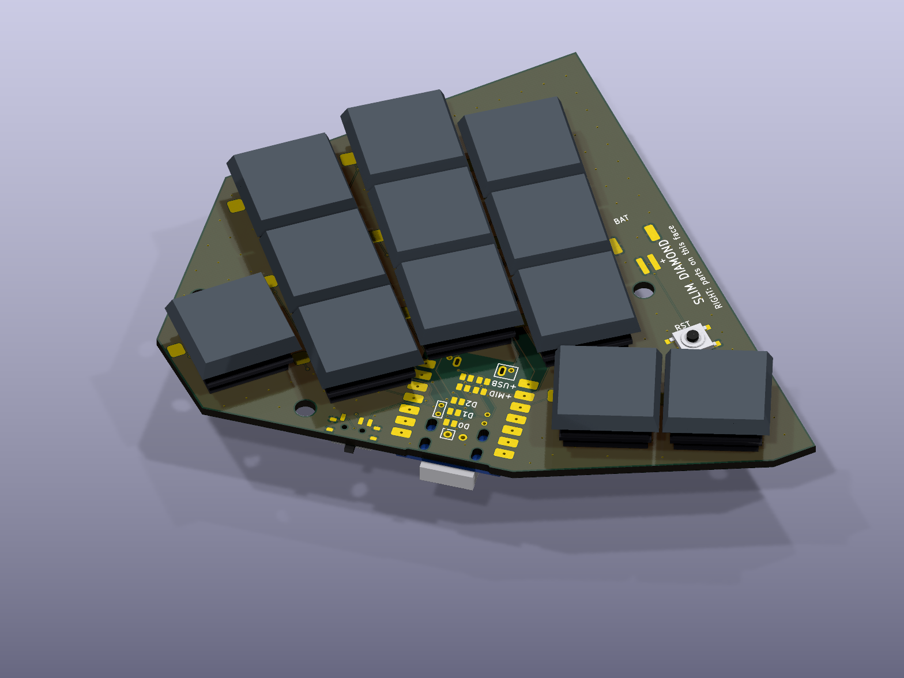
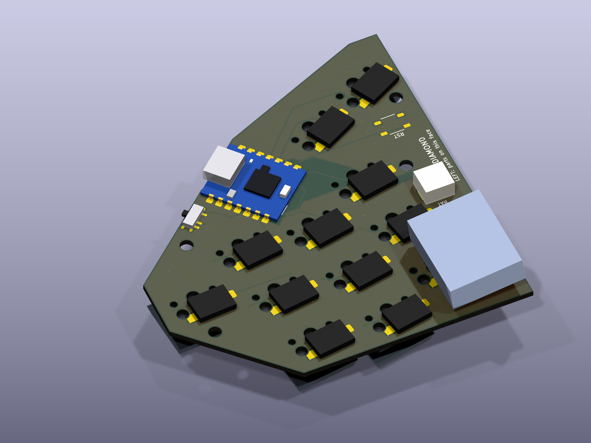
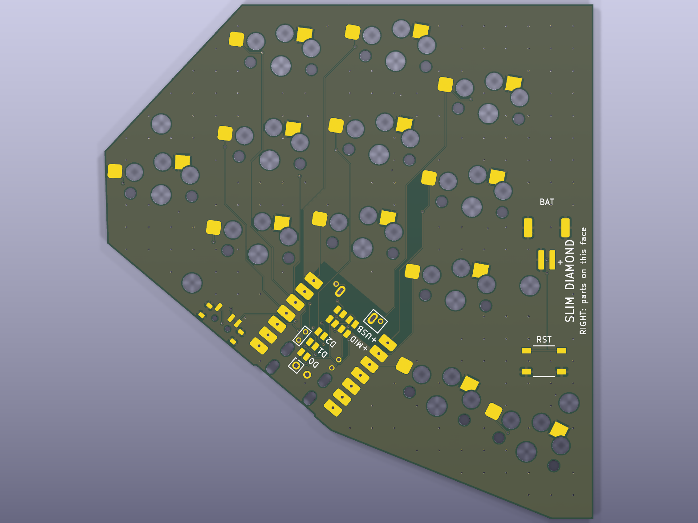
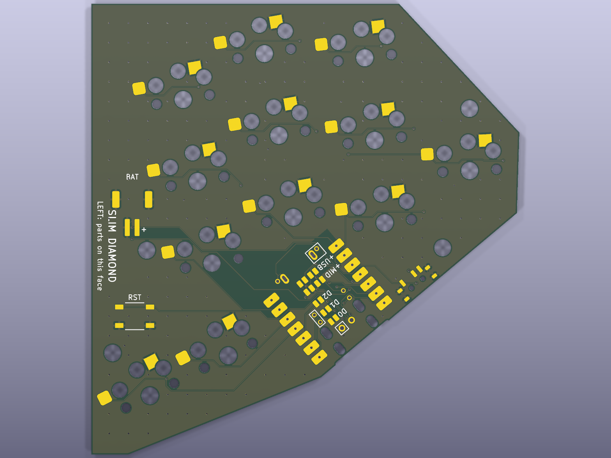
The reversible trick
The left half puts its parts on the back face; the right half is the same board flipped, with parts on the front. Flipped, the module's pins land mirrored: where the left half has D0, D1 and D2, the right half has VBUS, GND and 3V3. Solder jumpers route those three to their keys, and you bridge only the set on the face without the module.
The module's underside pads (battery, the 12th key's pin, reset) are reached through plated holes filled with solder from the other face, so the whole board stays iron-friendly. The reset pad sits exactly under the module's GND pad on the opposite mount, so each half's reset hole gets its own net and only reaches that half's button.
XIAO or Super52840
Both modules have the same 14 edge pins on the same nRF52840 pins, so the layout, case, plate and firmware are shared. Underneath they differ. Their battery pads sit in the same two spots but swapped, so a battery selector on the switch face picks which hole is +: bridge the row labelled +MID or +USB. The Super52840's pads were measured from photos against the 2.54 mm pin pitch.
| Seeed XIAO nRF52840 | NologoTech Super52840 | |
| Battery + | The pad nearer the middle: bridge +MID | The pad nearer the USB end: bridge +USB |
| 12th key | NFC1 pad (P0.09) | P0.09 in a row of nine extra GPIO pads, 1.3 mm away: a hole under each, on one net |
| Reset | Test pad | Same place |
| USB-C | Surface-mount | Legs through its board, cleared by holes; sticks out 0.8 mm further, inside the case's recess |
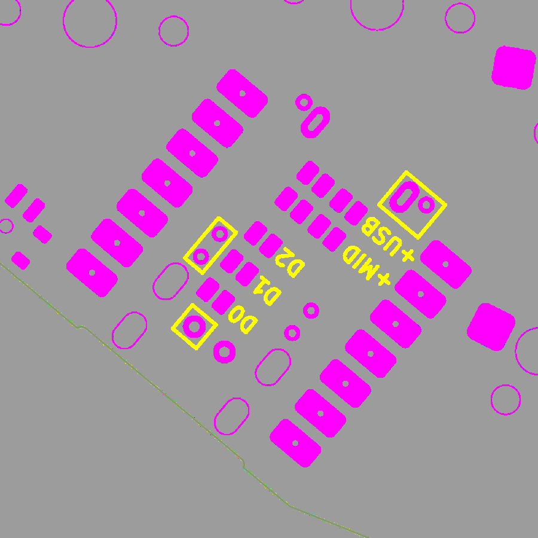
+MID / +USB selector, the boxed fill holes.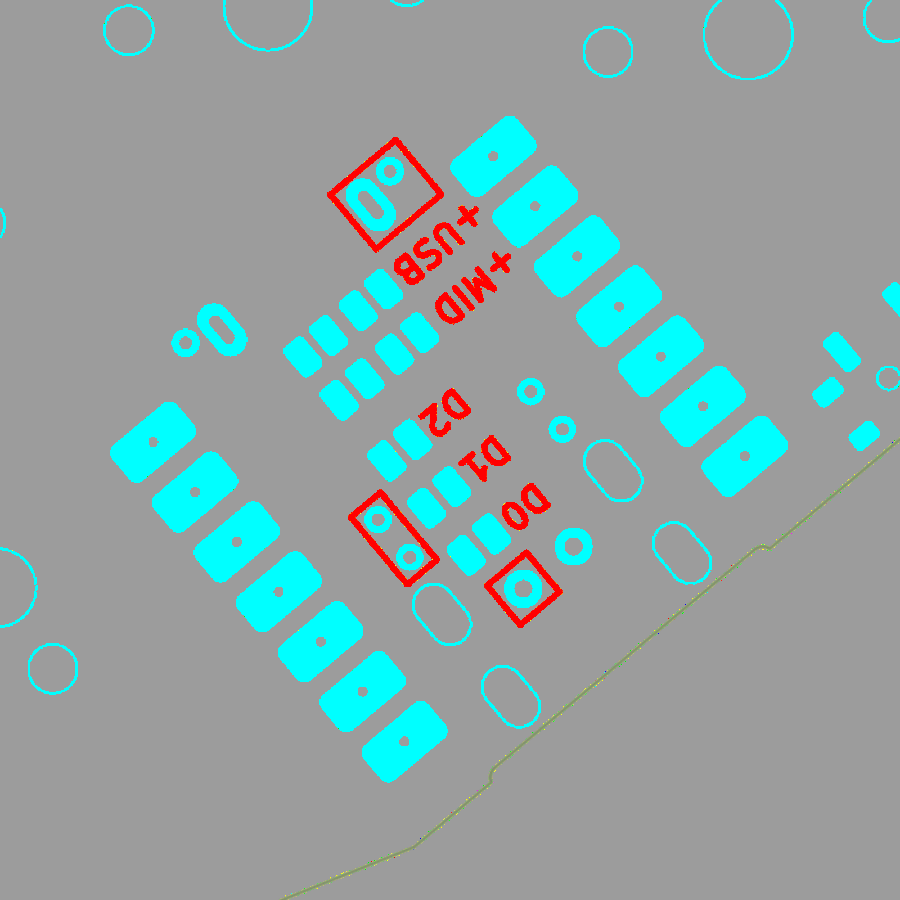
Everything is a script
One design.json places everything from the key layout: the Xiao, battery, connector, screws and magnets. The tent angle is the smallest one the parts under the PCB fit beneath.
Runs headless in the official container. Footprints are written as text, checked against KiCad's library, Seeed's OPL library and kiswitch, then the board is built by script.
Autoroutes the board; pours and stitching vias go on afterwards.
Design-rule check, Gerbers and drill files for JLCPCB, and every render on this page.
Builds the base and plate as solids, then intersects every part with them. Anything that isn't 0 mm³ fails.
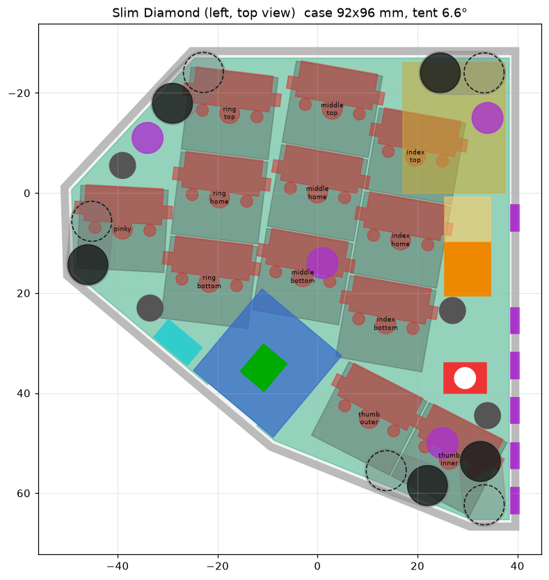
No CAD window, just a loop
A model can't drag parts around in a GUI, so the design lives in code and every judgement is a number or a picture it can inspect.
- GeneratePlacement, footprints, board, solids, all from scripts.
- CheckDRC with zero errors, and the fit check at 0 mm³.
- LookRender the board and case, then read the images.
- Fix upstreamChange the generator, never the output by hand.
- RegenerateRerun the whole chain from
design.py.
What gets checked
Every part that could collide is modelled, and the fit check fails on anything above 0 mm³. Some checks cover how the keyboard is assembled and used, not only where parts sit:
A USB-C cable seats fully
A recess the size of the largest Type-C overmold (12.35 × 6.5 mm) reaches the port, and the PCB edge is notched in front of it. The check plugs in a cable of that size.
The PCB drops straight in
The power switch's lever reaches past the PCB edge, so it slides down a slot open to the top. The slot widens outwards so a fingernail reaches the lever. The check sweeps the lever along the drop-in path.
Room for tolerances
0.5 mm around the PCB and plate covers JLCPCB's ±0.2 mm outline tolerance plus print shrinkage.
Magnets in solid plastic
Ten 8 × 3 mm magnets per half, six along the seam and four in the floor. Each pocket keeps 0.5 mm of plastic all round, measured against the printed base.
$ python check_fit.py
sockets vs base 0.000 mm3
xiao vs base 0.000 mm3
battery vs sockets 0.000 mm3
plate vs base 0.000 mm3
usb plug vs base 0.000 mm3
usb plug vs pcb 0.000 mm3
switch lever (dropping in) vs base 0.000 mm3
reset button body vs plate 0.000 mm3
seam magnet 1 (+0.5 all round) vs voids 0.000 mm3
magnets (+0.5) vs each other 0.000 mm3
stacked: left pads vs right pads 0.000 mm3
balance, unibody nearest key 2.79 mm inside (2.0 needed): ok
ALL CLEAR
Excerpt of the output.
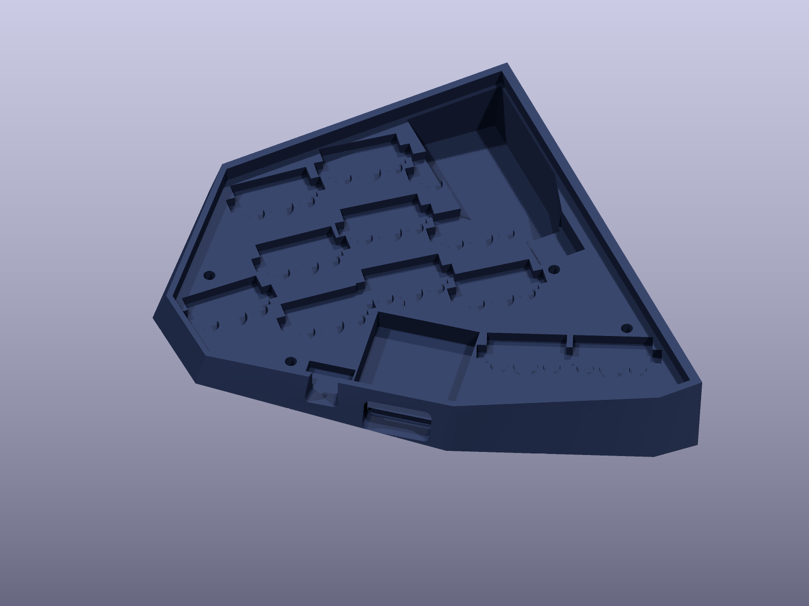
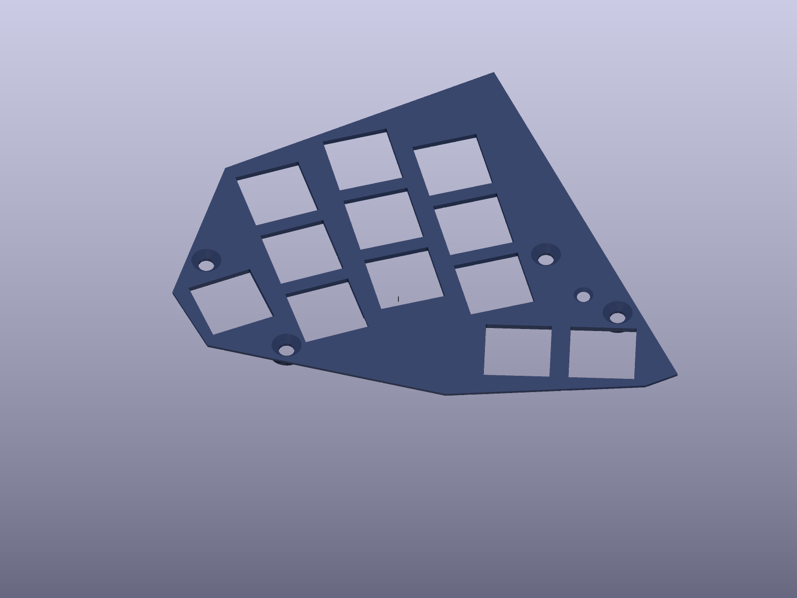
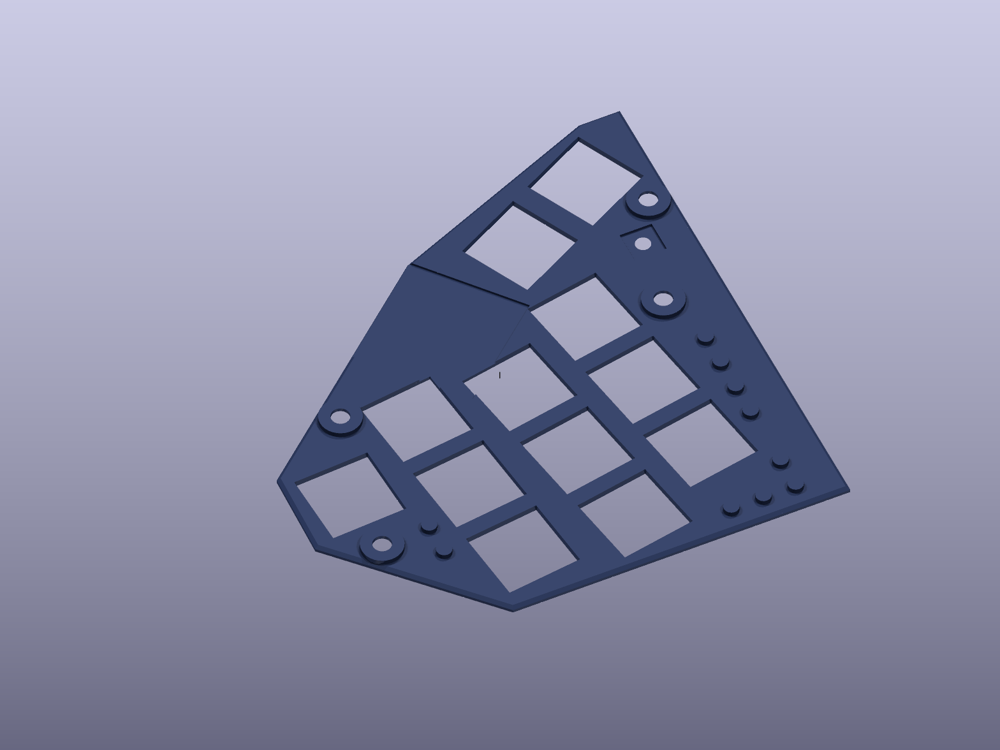
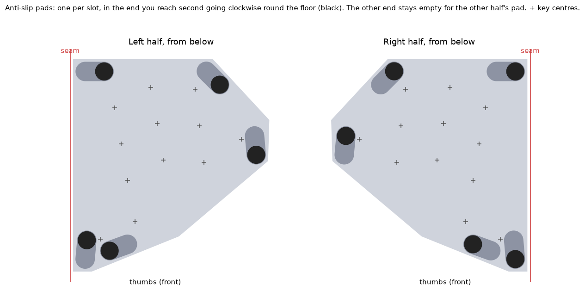
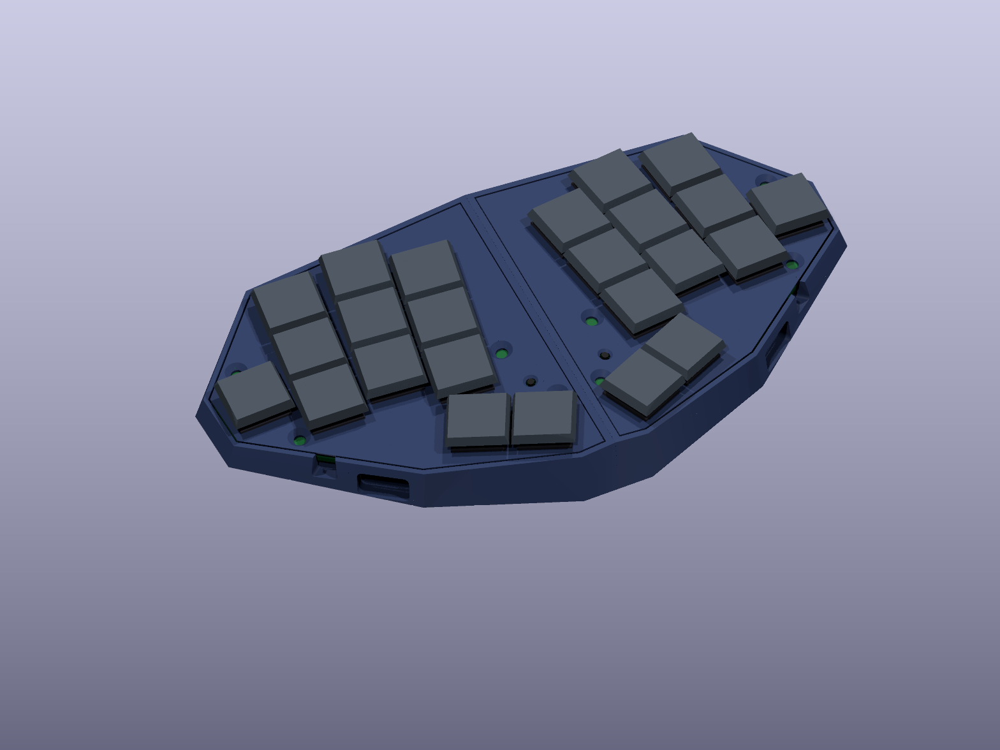
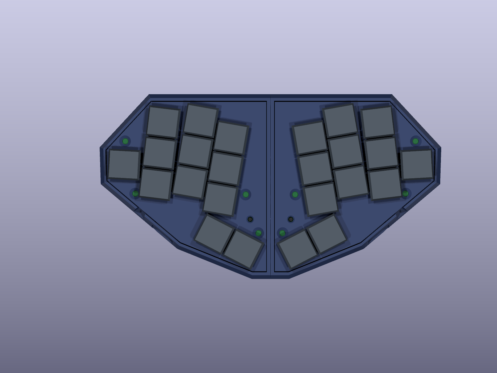
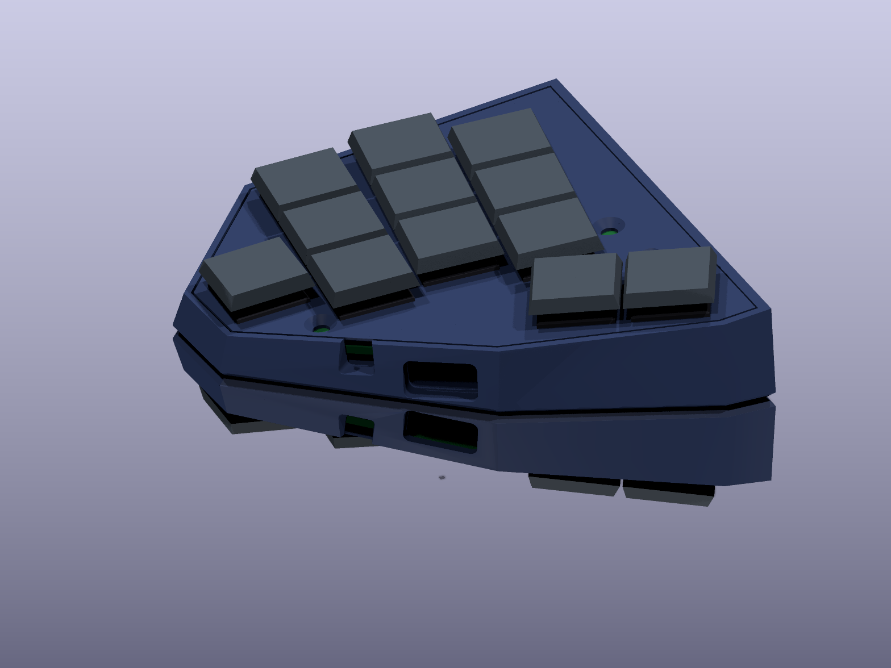
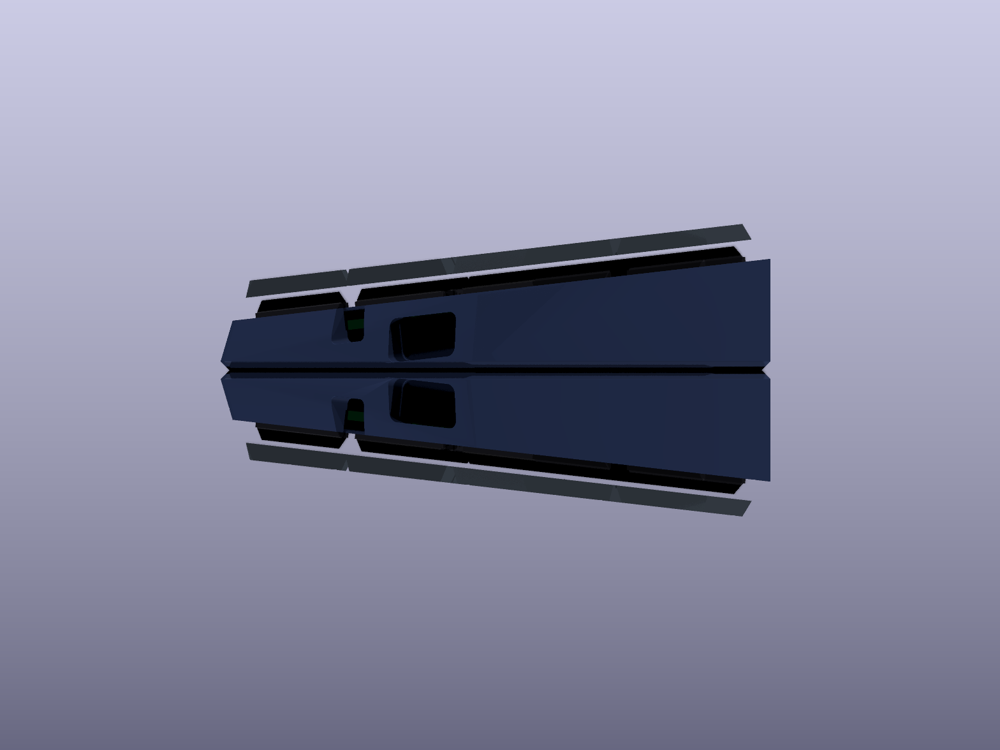
Bill of materials
Quantities are for one keyboard (both halves). The PCB is reversible, so both halves use the same board. "Spares" are worth ordering because AliExpress packs come in round numbers anyway.
| # | Part | Qty | Search AliExpress for | Notes |
|---|---|---|---|---|
| 1 | PCB, fab/slim_diamond_jlcpcb.zip |
2 (order 5) | (JLCPCB, not AliExpress) | 2 layers, 1.6 mm, 87.6 × 92.3 mm, HASL, any colour. The cheapest tier: 5 boards is 2 keyboards plus a spare. |
| 2 | Seeed Studio XIAO nRF52840, or NologoTech Super52840 | 2 | Seeed XIAO nRF52840 / Super52840 or MINI NRF52840 18x21 |
The same board takes either; set its battery selector to match (BUILD.md, step 1). XIAO: the plain one (not "Sense", not "Plus"), genuine Seeed, since the board relies on its bottom pads (BAT, GND, NFC1). Super52840: the one with B+/B- pads and a row of nine GPIO pads underneath. |
| 3 | Kailh Choc v1 switches | 24 (+2) | Kailh choc low profile switch |
Any v1 (PG1350) switch. Not v2 (MX stem) and not Choc mini. |
| 4 | Kailh Choc hot-swap sockets | 24 (+4) | Kailh choc hotswap socket PG1350 |
CPG135001S30, the low-profile socket. |
| 5 | Choc keycaps, 1u | 24 | MBK keycaps choc / CFX choc keycaps |
All 24 are 1u (17.5 × 16.5). Thumbs and pinky too. |
| 6 | LiPo battery 752025, 250 mAh, 3.7 V | 2 | 752025 lipo 250mah JST PH 2.0 |
7.5 × 20 × 25 mm. Ask for the JST PH 2.0 plug. Check polarity before plugging in (see below). |
| 7 | JST PH 2.0, 2-pin, SMD horizontal socket | 2 (+2) | JST PH 2.0 2P SMD horizontal |
S2B-PH-SM4-TB footprint: side entry, two signal pads and two big mounting tabs. |
| 8 | Slide switch MSK-12C02 | 2 (+3) | MSK-12C02 SMD slide switch |
The 7-pad SMD one with two locating pins. |
| 9 | Reset button: SMD tact switch 5.1 × 5.1 mm, 2.0 mm tall, 4 gull-wing legs (XKB TS-1187A-B-D-B or equivalent) | 2 (+3) | 5.1x5.1x2.0 SMD tactile switch 4 pin |
On the switch face, in the nook above the thumbs: reset, or double-tap for the bootloader, with the case closed. The height matters: 2.0 mm puts the plunger 0.2 mm under the plate's top. The common 1.5 mm one (LCSC C318884) fits too, but then sits 0.7 mm down and needs a fingernail or a pen tip. |
| 10 | Disc magnets 8 × 3 mm, N52 | 20 (+4) | 8x3mm N52 neodymium magnet |
Ten per half, all the same part: four in the floor (the halves stack back to back) and six in the inner wall (the halves join as a unibody). |
| 11 | M3 × 8 flat-head screws, 90° countersunk (ISO 10642 / DIN 7991) | 8 | M3x8 countersunk flat head screw |
Four per half: through the plate (the head sits flush in its countersink) and the PCB, threading into the solid base (2.5 mm pilot holes). |
| 12 | Silicone bump-ons 8 × 2 mm, self-adhesive | 10 (+6) | 8x2mm silicone bumpon self adhesive |
Five per half, in the slots under the floor (see BUILD.md). Clear or black, round, 8 mm diameter, 2 mm tall; up to 2.2 mm still lets the floors meet. |
| 13 | Filament | ~170 g | Nylon (PA) | Case left + right (solid base, 57.3 cm³ each) and the two top plates (4.3 cm³ each). |
Consumables: thin solder (0.5–0.6 mm), flux, a little kapton tape, CA glue or epoxy for the magnets.
Soldering, assembly and printing: see BUILD.md.
Soldering and assembly
The module, battery and battery socket all end up inside the case, under the PCB. Only the USB-C port and the power-switch lever show, through openings in the outer wall: a recess the size of a cable's plug in front of the port, and a slot open to the top for the lever. Push the lever with a fingernail. The module's LED and its own reset button face the case floor, so flash and test it before closing the case. A second reset button on the switch face, wired to the module's reset pad, works with the case closed: it sits in a cone in the plate, above the thumbs.
Everything is soldered with an iron: no paste, no hot air. Build one half at a time. Both halves use the same PCB, turned over for the right half.
The module is a Seeed XIAO nRF52840 or a NologoTech Super52840. The board takes either: a battery selector, set in step 1, matches it to your module. The other steps are the same for both.
Tools
- Temperature-controlled iron with a small chisel tip (1.6–2 mm) for the module, sockets and JST tabs, and a fine conical tip for the power switch.
- Leaded solder: about 330 °C.
- Lead-free: about 360 °C.
- Thin solder (0.5–0.6 mm), a flux pen, fine tweezers, kapton tape, isopropyl alcohol and a brush.
- A multimeter with a continuity beep.
- Optional: a magnifier or phone camera to inspect the small pads.
The two faces
Each board has a parts face and a switch face. The silkscreen tells you which is which:
| Half | Parts face (silkscreen) | Switch face |
|---|---|---|
| Left | LEFT: parts on this face |
the other one |
| Right | RIGHT: parts on this face |
the other one |
- Parts face: the module, power switch, JST socket and the 12 hot-swap sockets. It faces the case floor.
- Switch face: the key switches clip in here, the reset button is soldered here, and you bridge the jumpers and fill the module's holes from this side.
The module always lies flat on the parts face, with its pad side against the PCB and its components (USB-C, shield, reset button) pointing away from it, towards the case floor.
Before you start
- Flash and test the module first. Plug it into USB and double-tap reset: a USB drive appears. Copy the firmware onto it:
| Half | With a dongle | Without a dongle |
|---|---|---|
| Left | slim_diamond_peripheral_left-zmk.uf2 |
slim_diamond_central_left-zmk.uf2 |
| Right | slim_diamond_peripheral_right-zmk.uf2 |
slim_diamond_peripheral_right-zmk.uf2 |
A dead module is much easier to swap now than after soldering.
- Battery polarity. Silkscreen + marks pin 1 of the JST socket. Cheap 752025 cells ship with either polarity: check the plug with the multimeter. If it's reversed, swap the two crimps in the plug housing (lift each tab with a needle).
- Magnet polarity. Every left-half magnet goes in with the same pole facing out, and every right-half magnet with the other pole. That makes both the stack and the side-by-side join attract. Mark one face of each magnet stack before you start.
1. Bridge the D0–D2 jumpers and the battery selector (switch face)
On the switch face, inside the module's outline, there are three small pad pairs labelled D0, D1, D2, on the face without the module. Flux them and bridge each pair with a small blob of solder.
Next to them is the battery selector: two rows of two pad pairs, labelled +MID and +USB. The two modules have their battery pads in the same spots, swapped, and the row you bridge decides which battery hole is +:
| Module | Bridge both pairs in row |
|---|---|
| Seeed XIAO nRF52840 | +MID (its + pad is the one nearer the module's middle) |
| Super52840 | +USB (its B+ pad is the one nearer the USB end) |
Bridge one row only. Both rows short the battery; the wrong row connects it backwards. Both halves get the same row.
Left: the left half's switch face. Right: the right half's switch face. Bridge the three D0–D2 pairs and one selector row, and later fill the three boxed hole groups (step 2).
Leave the jumpers on the other face open: they're on the parts face, under where the module will sit.
Check: each bridged pair beeps on the multimeter, and the unbridged selector row doesn't.
2. Solder the module (parts face)
- Pre-tin the module's underside pads that the boxed holes reach: the two battery pads (VBAT and GND on the XIAO, B+ and B- on the Super52840), the P0.09 pad (NFC1 on the XIAO,
009on the Super52840) and RST. Flux each one and touch it with a lightly tinned iron, leaving a thin, flat coat. Wick off any bump: a blob lifts the module off its edge pads. In step 4 the solder fed into each hole then only has to melt into the coat that's already there. - Flux the 14 edge pads. Lay the module flat over its outline with the USB-C end towards the board edge. The pads are pulled out past the module, so you can reach them from the side.
- Tack two opposite corners: put solder on the iron, touch it to the board pad and the castellation together, and let it flow. Check the module is flat and every castellation sits over its pad. Reheat a corner to adjust it.
- Solder the other 12 edge pads the same way: iron on the board pad, solder fed into the castellation. Each joint should be a small concave fillet up the half-hole.
- Turn the board over (switch face up). Fill the boxed holes: the pair inside one box (the battery), both holes in the second box (P0.09: one under each module's pad, so fill both), and the round hole in the small square box near the USB end (RST, the module's reset pad). Hold the iron on the ring for 2–3 s and feed solder into the hole until it fills and stops sinking. That means it has wetted the module's pre-tinned pad underneath. Fill only the boxed holes. The unboxed ones belong to the other half. Most sit under bare module areas; the unboxed reset hole sits under the module's GND test pad, and only wires to the other half's (empty) button pads, so it does no harm either way.
- Clean off the flux.
The battery holes and one P0.09 hole are smaller than the rest (0.6 mm, as large as the pads above them allow): flux them well, use thin solder (0.5 mm), and hold the iron on the ring until the solder sinks into the hole before you feed more.
Check: - Before any battery goes in: the power switch's middle pin (VBAT) must not beep to the module's GND castellation. A beep means the wrong selector row, or both: fix it first. - The battery hole the selector made + beeps to the power switch's middle pin. - The RST hole does not beep to GND (the module's reset is pulled up inside the module: a beep means a solder bridge, and the half would sit in reset). - No two adjacent castellations beep to each other.
3. Power switch, MSK-12C02 (parts face)
It goes next to the module's USB-C, with the lever pointing out over the board edge and its two locating pegs in the small holes.
- Tin one of the four corner (shield) pads. Place the switch with tweezers and reheat that pad to tack it.
- Solder the other three shield pads.
- Solder the three signal pads with the fine tip and very little solder. A bridge between the middle pin and its near neighbour does no harm (both are VBAT). A bridge from the middle pin to the far one bypasses the switch: wick it away.
4. JST battery socket (parts face)
Its opening faces the battery's spot under the inner keys. Tack one signal pin, check it sits flat, and solder the other pin. Then solder the two large mounting tabs: they need more heat and more solder, because they take the force of plugging the battery in.
5. Hot-swap sockets (parts face)
Twelve, one per key. Each socket fits its outline only one way round.
- Tin one pad lightly, place the socket, and hold it flat with tweezers while you reheat the pad until the socket's metal tab sinks into the solder.
- Solder the second tab. Use enough solder to make a fillet, but keep it out of the socket's opening.
6. Reset button, TS-1187A (switch face)
It goes on the switch face, in the gap above the thumb keys, inside its outline labelled RST. The part is square and symmetric: any of the four ways round works.
- Tin one corner pad, hold the button flat and centred with tweezers, and reheat the pad to tack it.
- Solder the other three legs: a small fillet on each, iron on the pad and against the leg. Keep the solder off the body: the button is 2.0 mm tall and the plate's pocket over it leaves only 0.3 mm above the collar.
Check: the RST hole (step 2.4) beeps to the two legs on the RST side of the button (the side with the label), and beeps to GND only while you press the button.
7. Test (before the case)
- Plug in USB. With the firmware flashed and your computer paired or connected, short each socket's two contacts with tweezers. Every key should register.
- Plug in the battery, unplug USB and toggle the power switch: the half should stay connected.
- Press the reset button once: the half reboots (it disconnects and reconnects). Press it twice quickly: a USB drive appears (the bootloader), as with the module's own button.
| Symptom | Look at |
|---|---|
| One key dead | That socket's two joints |
| Pinky, ring-bottom or middle-home dead | Its D0–D2 jumper (step 1) |
| Index-top dead (both halves) | The NFC1 / P0.09 hole (step 2.4) |
| Works on USB, not on battery | The battery holes, the selector row (step 1), the power-switch joints, battery polarity |
| Reset button does nothing | The RST hole (step 2.4) and the button's legs (step 6) |
| Half never starts, or keeps rebooting | RST bridged to GND: the RST hole or the button's legs |
| Nothing works | The module's castellations, or the firmware file |
8. Case and plate
The base is solid up to the PCB's underside, with a pocket for every part. The PCB rests on plastic everywhere, which makes the half stiff and quiet. The top plate covers the whole board: the switches clip into it, and a shallow pocket in its underside clears the solder around the module.
- Press the magnets into their pockets (polarity!) and wick a drop of CA glue around each.
- Lay the battery in its bay and plug it into the JST socket. The plug and the slack of its leads sit in the bay, between the battery and the socket.
- Lower the PCB, parts face down, into the base. Each part drops into its pocket, the switch lever slides down its slot, and the USB-C port lines up with its recess. Nothing should need force: every pocket has 0.6 mm of clearance, and the PCB 0.5 mm to the outer walls.
- Lay the plate on top, its pillars and screw bosses resting on the PCB, and fit the four M3 × 8 flat-head screws through the plate and PCB. They cut their own thread in the Nylon: turn them in slowly, and stop when the heads sit flush in their countersinks.
- Clip the switches through the plate into the sockets, then fit the keycaps. The reset button now sits under a cone in the plate, between the index finger's bottom key and the thumbs. Its plunger is 0.2 mm under the plate's top, so keycaps and palms don't reach it.
- Anti-slip pads. Each floor has five slots, each long enough for two pads. Stick one 8 × 2 mm bump-on into one end of every slot and leave the other end empty: when the halves are stacked back to back, the other half's pad drops into that empty end, so the floors and magnets still meet.
The rule is the same on both halves: turn the half over and go clockwise round the floor. In every slot, the pad goes in the end you reach second. Then each half's five pads sit in the ends the other half leaves empty.
Clean the slots with isopropyl alcohol first and press each pad down firmly against the slot's roof, centred in its round end. Stack the halves to check: they should close flat, with no rocking.
Resetting a closed half
Press straight down into the cone above the thumbs with a fingertip (the pad, not the nail, is enough: the cone is 4.2 mm across at the top and the plunger 2.0 mm wide).
- Once: the half reboots.
- Twice quickly: the bootloader. With USB plugged in, a USB drive appears: copy a
.uf2onto it to flash new firmware, as in "Before you start".
Printing
- Base: floor-down, no supports (the wall over the USB recess and the roofs of the pad slots, 8.6 mm wide, bridge). For a quiet, solid base, use 4–5 walls and 40–100% infill (gyroid, or solid). More infill means less hollow sound and more weight.
- Plate: top face down: the STL is already oriented that way, with the pillars and screw bosses pointing up. The reset button's cone narrows upwards at 45° from the bed (4.2 mm to 2.8 mm over the first 0.7 mm) and needs no support. Print it solid, at 0.2 mm layers. The switch cutouts are 14.0 mm (13.8 mm + 0.1 mm per side); if your switches are loose or tight, change
cut_tolindesign.pyand regenerate. - Nylon: dry the filament before printing. It's tough enough to take the self-tapping threads without cracking, and its softness damps key noise.
Not built yet
Nothing has been fabbed or printed. Every check is numeric, so the first print is the real test of the tolerances. Sources, Gerbers, STLs, a BOM and a hand-soldering guide are in the repo: rafaelromao/diamond.